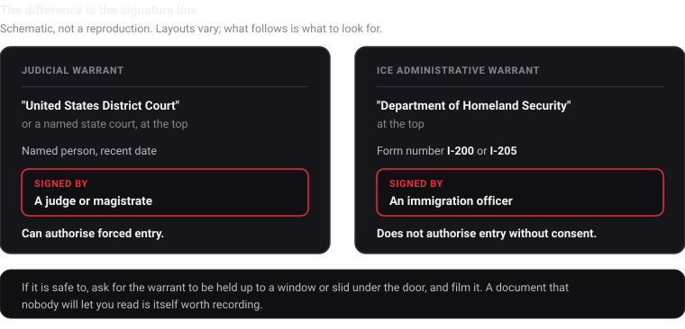

How to film ICE safely
Recognising what you are looking at, what to capture, and making sure it survives.
Documenting immigration enforcement in public is protected activity. What makes it harder than filming police is that you often cannot tell who you are looking at: unmarked cars, plain clothes, no visible name. This page is about the documenting. It is not a know-your-rights guide and I am not the right person to write one.
For your rights, go to the people who do this properly: the Immigrant Legal Resource Center, the National Immigrant Justice Center, United We Dream, and the NYCLU on filming ICE. Nothing here is legal advice.
First, the phone setting
Use a passcode rather than Face ID or Touch ID. US courts have generally treated being compelled to say a passcode differently from being compelled to hold your face up to a phone, and the asymmetry cuts against biometrics exactly when it matters. On an iPhone, holding the side button and a volume button for a second forces it back to passcode entry, and it works from inside a pocket.
The general safety guidance for filming law enforcement applies here too. What follows is what is different about ICE.
Two companion pages go further in specific directions: what to capture at a street stop, a workplace, a courthouse or a shared building, and what to film and say when agents are at your own door.
Recognising what you are looking at
This is the part with no equivalent when filming local police, and it is why so much enforcement activity goes undocumented until it is over.
Vehicles. Community guidance consistently describes midsize SUVs and large vehicles with tinted windows, often moving in small convoys, and unmarked sedans such as Dodge Chargers and Ford Tauruses. Plates are frequently out of state, temporary, or absent.
People. Agents may be in clearly marked tactical gear, or in plain clothes with a badge on a belt clip or a lanyard, which is common for Homeland Security Investigations. A vest reading POLICE over civilian clothing is not the same thing as a local police officer, and that distinction is worth capturing on camera.
Say what you see, out loud. "Three unmarked SUVs, tinted windows, no plates, four men in plain clothes with badges on lanyards" is a description that survives even if the footage is shaky and nobody is identifiable.
You can ask who they are
You have an absolute right to ask "Who are you? What is your name? What agency?" You may well not get an answer. Ask anyway, on camera, because the refusal is itself part of the record.
Filming a badge to read the name is an appropriate response to a refusal. If you cannot get close enough to read it, read out loud whatever you can see, and describe the person clearly.
If told to stop filming, one phrasing that observers use: "I am exercising my right to document this arrest." Then keep your distance and keep filming.
The warrant question
If agents are at a door, this is the single most useful thing to get on camera, and the distinction is genuinely simple once you know it.

An administrative warrant on Form I-200 or I-205 is signed by an immigration officer, not a judge, and does not by itself authorise entry into a home without consent. A judicial warrant carries a court name at the top and a judge's or magistrate's signature.
Filming the document, if it is held up to a window or slid under a door, captures which one it was. A warrant nobody will let anyone read is also worth recording.
If this is happening at your own home rather than somewhere you are observing, the sequence is different and it has its own page: why the door stays closed, what to say through it, and what the recording needs to catch.
What to film
Same order as anywhere else: wide first to establish the scene, then medium to show who is doing what, then the identifying detail. For enforcement activity specifically, the details worth chasing are:
- Vehicles, plates, and how many there are
- Whether agents are in uniform or plain clothes, and what any vest or badge says
- Badge numbers, or your voice reading them if the camera cannot
- Who is taken, how many, and which vehicle they are put into
- Anything said about where they are being taken
- The time, repeatedly, out loud
Narrate observable fact, not conclusions. "Four people were put into the second SUV at 7:12" is usable. Characterising motive is not, and can be used to argue the footage was filmed toward a conclusion.
Making sure it survives
Every guide tells you to have your video syncing to the cloud, and that advice is right. The usual mechanism is weaker than people assume: photo library sync generally treats your recording as one file that will not upload until you stop recording, and defers on cellular or low battery.

Witness uploads in roughly 15 second pieces while you are still filming, to a cloud account you own, and shares each recording automatically with a contact you nominate once. There is no server on my end, so there is no copy of anything to subpoena from me. There is more than one app that uploads during recording, and I have compared them including where mine loses.

Set it up before the day. An app never connected to a storage account saves nothing, and nobody configures cloud accounts while a raid is happening. The setup guide takes about five minutes.
Before you post it
This matters more here than almost anywhere else, and it is the step most often skipped in the rush to get footage out.
A crowd shot can identify people who did not choose to be identified, including people whose immigration status or safety depends on not being in a public video. Blur faces you do not have permission to show. Free tools on both iOS and Android do this, and organisations working in this space consistently ask people to.
Keep an unblurred original, untouched, for lawyers and journalists. Share the blurred version publicly. Note that re-encoding for a blur changes the file, so the hash on the original is what verification runs against, not the version you posted.
Why an unedited record matters here
Footage of enforcement activity is routinely disputed, and increasingly the dispute is about whether the video is genuine rather than what it shows. Every piece is SHA-256 hashed on the device before it moves, and the session manifest is counter-signed by an independent time-stamp authority, so a lawyer or newsroom can check it is unaltered without trusting you or me.
One thing that catches people constantly: sending footage through a messaging app re-compresses it and breaks the hash match. Share originals or a link to them.
What this does not do
No network, no upload. Inside a building or a facility, pieces queue on the device until there is signal.
It cannot help if you are compelled to unlock the phone. Uploaded footage is beyond the reach of the device, but not of the cloud account the phone is signed into.
It does not make anything lawful that is not, and it is no protection from an obstruction charge.
It is not legal advice, and immigration law is not a thing to take from a developer's website.
For rapid response networks
If you are coordinating volunteers rather than acting alone, a few things are worth deciding centrally: which storage destination everyone uses, who the standing emergency contact is, and who knows how to run the verification steps when footage needs to hold up. Happy to help set that up, at no cost, at olmaster13@gmail.com.
Written August 2026. Enforcement tactics and the law both change. Nothing here is legal advice.